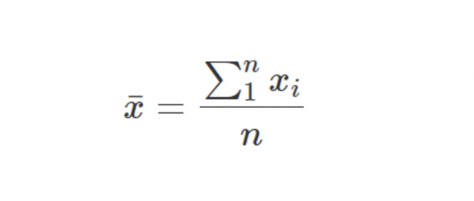
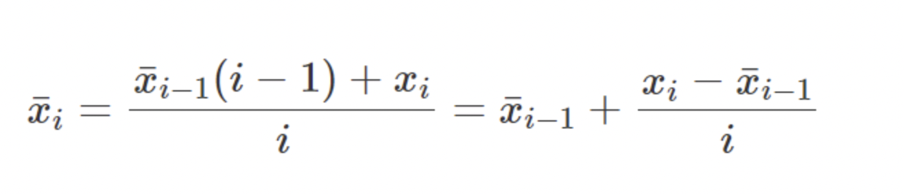
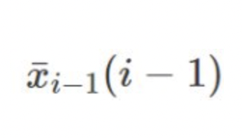

"Describe the most common configuration of data repositories in the real world and corporate environment. Concepts such as Operational or Transactional systems (OLTP), Data Warehouse DW, Data Marts, Analytical and statistical systems (OLAP), etc. Try to draw a conceptual picture of how all these components may work together and how the flow of data and information is processed to extract useful knowledge from raw data."
Most common configuration of data repositories used by every corporation has these main components:
1- OLTP
2- Data Stream
3- Data Lake
4- Data Swamp
5- Data Warehouse
6- Data Mart
7- OLAP
OLTP stands for Online Transaction Processing, it is a set of software techniques used to make transactions on databases. A transaction could be updating, inserting, and/or deleting some data. Data generated by OLTP systems are seen as a Data Stream which converges in a so called Data Lake.
A Data Lake is a centralized repository that allows you to store all your structured and unstructured data. This simplifies the storage since is possible to store data as it arrives from the Data Stream
A Data Warehouse, like a Data Lake, is a centralized repository but it is optimized to analyze data. This means that here the schema in which data is contained is well defined to optimize data analysis as needed. Data is transferred from Data Lake to Data Warehouse following a process called ETL (Extract, Transform, Load) that organizes the data according to the schema defined in the Data Warehouse.
A Data Swamp is a branch of the Data Lake where old and less useful data are stored.
A Data Mart is a subset of the Data Warehouse and it is referred to a single department of a corporation. So, it is a database that stores data related to the same topic. For example we can have a Data Mart related to the marketing department, another Data Mart related to the sales department and so on.
A typical workflow, in a data stream model, might work like this:
1. Data is collected into a data lake usually from a OLTP source: OLTP (OnLine Transational Processing) is a category of data processing that is focused on transaction-oriented tasks and it typically involves inserting, updating, and/or deleting small amounts of data in a database. These transactions provide a stream of raw data inserted in our data lake[4].
2. From here the data is processed usually following the procedure called ETL: first the data is Extracted from a source system to be processed at a later stage, then it undergoes a Transformation (cleansing, normalizing, merging, etc) to meet the requirements of the target system, and finally it is Loaded in the end system (a Data Warehouse or a Data Mart)
3. Then data is analysed using OLAP techniques (OnLine Analytical Processing): the key function of a OLAP system is to provide decisional and analytical support by studying processed data with complex queries on large amounts of data.
"Show how we can obtain an online algo for the arithmetic mean and explain the various possible reasons why it is preferable to the "naive" algo based on the definition".
Everyone is for sure familiar with the naive approach on computing an arithmetic mean:
But this formula is not the correct way to compute an average! We should instead use the Knuth formula (or running mean):
Looking at the first part of the formula: by definition on average, we can say that the sum of the first i-1 terms is equal to their average times the number of items
then we can add the new term xi and divide everything by i. After rewriting the formula we come up with the one on the right.
This elegant formula provides several advantages:
1. We can update the mean every time a new value is recorded: as we can see, there’s no need to know all the values before our calculation. This makes it the only real choice for applications related to stream processing;
2. It’s extremely memory efficient since we need to just update the previous mean with the current incoming value without the need to store the whole dataset;
3. Doesn’t suffer from overflows: in the naive formula, we need to sum all values before dividing it by the number of instancies and, by summing a lot of big numbers, we can cause an overflow in a computer application.
"Create - in both languages C# and VB.NET - a demonstrative program which computes the online arithmetic mean (if it's a numeric variable) and your own algo to compute the distribution for a discrete variable and for a continuous variable (can use values simulated with RANDOM object)."
"Create an object providing a rectangular area which can be moved and resized using the mouse. This area will hold our future charts and graphics."
"Understand how the floating point representation works and describe systematically (possibly using categories) all the possible problems that can happen. Try to classify the various issues and limitations (representation, comparison, rounding, propagation, approximation, loss of significance, cancellation, etc.) and provide simple examples for each of the categories you have identified"
-Mostly used floating point standard is IEEE754. A real number is represented by a couple of values:
Where:
1- m: mantissa
2- e: exponent
To get the real number by this couple is used the following formula:
As it’s possible to see, in this standard also a sign bit is available: if it is 1 then the number is negative, otherwise positive.
Special number values have a specific representation:
1- Zero is encoded with both exponent and mantissa as zero
2- Infinity is represented as all ones in the exponent bits and all zeros in mantissa
3- Not a Number (NaN) is represented using an all ones exponent and a non-zero mantissa
1. Rounding errors:
We have a limited number of digits to represent all real numbers, this brings some inaccuracy. When there are more digits needed to represent a real number than the format allows, the leftover ones are omitted, this means that the number is rounded.
2. Comparison errors
This error is related to a rounding error. It could happen that two different real numbers are seen equal by the computer. For example this instruction 2.999999999999999999999>=3
3. Loss of significance
It’s important to note that Floating Point math is commutative, but not associative! So unexpected results can occurr, such as loss of significance